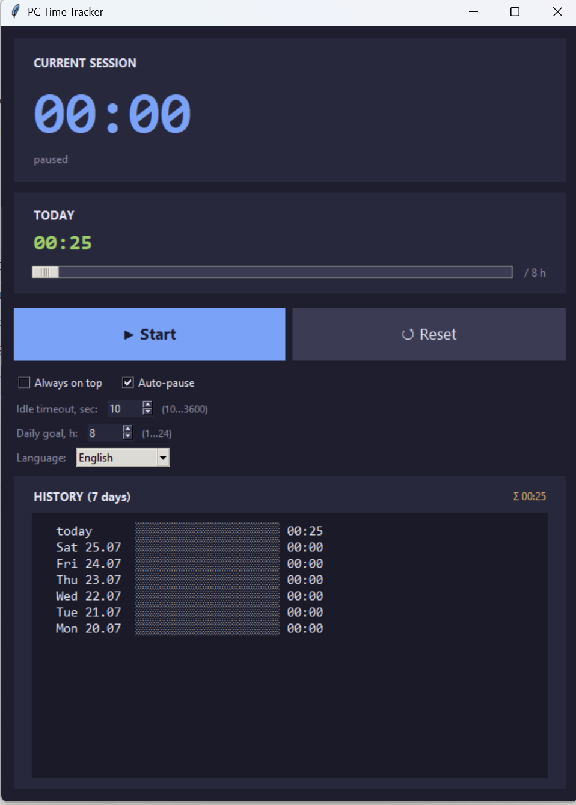

PC Time Tracker
A lightweight desktop timer for Windows that quietly counts how long you spend at the PC — with auto-pause, a daily goal, and 7-day history.

Everything you need, nothing you don't
Single Python file, no dependencies, no accounts, no telemetry.
Current session & daily total
Big live timer plus today's accumulated time at a glance.
Start / Pause / Reset
Simple controls — start when you sit down, reset when you need a clean slate.
Auto-pause on idle
Stops counting when you step away. Idle threshold is configurable (10–3600 s).
Configurable daily goal
Set a target from 1 to 24 hours and watch a live progress bar fill up.
7-day history
See how each of the last seven days stacked up with per-day progress bars.
Always on top
Pin the timer above your other windows when you want it in your face.
Auto-save & crash recovery
Saves every 10 seconds and on close — your sessions survive a reboot.
10 UI languages
English, Русский, 中文, Español, Français, Deutsch, Português, 日本語, 한국어, العربية.
Speaks your language
The whole UI — labels, buttons, menus — is fully translated into 10 languages.
Get started in seconds
No installer, no admin rights, no background service. Pick what suits you.
Already have Python?
Run it directly. Requires Python 3.10+ with tkinter (bundled on Windows).
python pc_time_tracker.pyJust want the app?
A single 8 MB standalone .exe — no Python needed, no installation.
⬇ Download .exeSource code
One Python file, ~900 lines, MIT licensed. Read it, fork it, learn from it.
Open on GitHub →